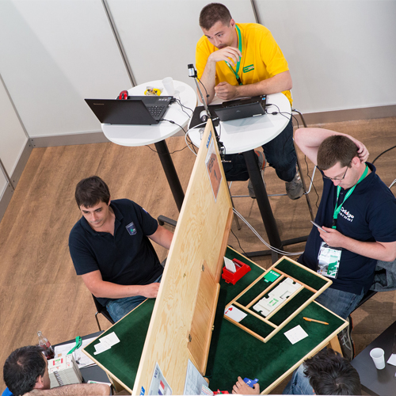

Résultats FFB
Les résultats de nos rondes sont publiés sur l’espace licencié de la Fédération Française de Bridge.
Espace FFBRondes régulières, événements festifs, interclubs et résultats officiels.
| Quand | Rendez-vous | Détails |
|---|---|---|
| Chaque lundi et mercredi 13 h 45 – 18 h 00 | Ronde de France Régulier | Tournoi par paires, toute l’année. 4 € adhérent · 6 € non-adhérent. Salle Saint-Exupéry. |
| Chaque mois | Événement du club Convivial | Tournoi à thème avec repas, voyage ou sortie, avec toujours un tournoi de bridge. |
| Décembre (9 décembre en 2024) | Tournoi des Dindes Festif | Un bon entraînement avant les fêtes de Noël, suivi d’un repas. Salle Saint-Exupéry. Date 2026 à confirmer. |
| Été | Sorties bridge Montagne | Herbeys, Chamrousse, Col de Porte : bridge, balade ou pétanque, et repas. Dates de l’été prochain à confirmer. |
| Selon l’actualité | Tournois caritatifs Solidaire | Par exemple, le tournoi au profit d’Espoir Isère contre le Cancer (29 mars 2025). |
Les résultats de nos rondes sont publiés sur l’espace licencié de la Fédération Française de Bridge.
Espace FFBRetrouvez aussi les résultats et les donnes sur la plateforme Bridge+.
Bridge+Classements, calendriers et compétitions du comité régional.
Comité DS| Compétition | Place | Joueurs de Montbonnot |
|---|---|---|
| Finale de comité interclubs D2 | 3ème | Jean-Louis Crochon, Emmanuelle Courot, Marcelle Baumann, Gérard Besson, Andrée Gadelle |
| Mixte par 4 — éliminatoires district | 1ers | Bernard Planque, Arlette Rat, Maryse Gagou, Michel-César Singer, Danièle Falque, Jacques Bergeri |
| Challenge d’hiver par quatre — finale Isère | 3èmes | Evelyne Ragusa, Yannik Giovansili, Danièle Galera, Marie-Pierre Derdinger, Richard Boissenot, Marie-Hélène Giraud, Brigitte Theuriau |
| Senior mixte par 2 — éliminatoires district | 1ers | Jacqueline Yver, Guy Mazare |
| Open par 4 performance — demi-finale de district | 2èmes | Bernard Planque, Laurent Pivat, Danièle Falque, Marie-Rose Durouge, Arlette Rat, Maryse Gagou |
Distinctions publiées par le club sur son site officiel. D’autres résultats sont à découvrir sur l’espace FFB.
Montbonnot Bridge favorise la participation du plus grand nombre à la vie du club. Il aide à constituer des équipes en match par 4 ou par paires et organise directement les équipes d’interclubs qui défendent nos couleurs.
Renseignements : Alain Tosi, responsable des compétitions — 06 10 72 11 78.
